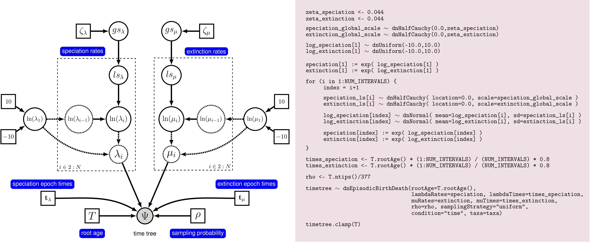

Estimating Speciation & Extinction Rates Through Time
Outline
This tutorial describes how to specify different models of incomplete
taxon sampling (missing reference) for estimating
diversification rates in RevBayes (Höhna et al. 2016). Incomplete taxon
sampling, if not modeled correctly, severely biases diversification-rate
parameter estimates (missing reference). Specifically, we will
discuss uniform, diversified, and empirical taxon sampling. All
analyses in this tutorial will focus on diversification rate estimation
through-time and use a birth-death process where diversification rates
vary episodically which we model by piecewise constant rates RevBayes
(missing reference). The probabilistic graphical model is given
only once for this tutorial as an overview. The model itself does not
change between the different analyses; only the assumptions of
incomplete taxon sampling. For each analysis you will estimate
speciation and extinction rates through-time using Markov chain Monte
Carlo (MCMC) and assess the impact of incomplete taxon sampling as well
as the sampling scheme.
Requirements
We assume that you have read and hopefully completed the following tutorials:
Note that the Rev basics
tutorial
introduces the basic syntax of Rev but does not cover any phylogenetic
models. We tried to keep this tutorial very basic and introduce all the
language concepts and theory on the way. You may only need the Rev
syntax
tutorial
for a more in-depth discussion of concepts in Rev.
For this tutorial it is especially important that you have read the two tutorials on diversification rate estimation: Basic Diversification Rate Estimation tutorial and Diversification Rates Through Time tutorial. Specifically the Diversification Rates Through Time tutorial present the underlying diversification model and thus foundation for this tutorial. Here we will build on the tutorial by modifying the assumptions of incomplete taxon sampling in different ways.
Data and files
We provide the data file(s) which we will use in this tutorial. You may want to use your own data instead. In the ‘data‘ folder, you will find the following file
- ‘primates.tre‘: Dated primates phylogeny including 23 out of 377 species.
Note that we use here the small primate phylogeny including only 23 of the 377 taxa instead of the much more complete primate phylogeny from (Springer et al. 2012). This choice was solely made to emphasize the point and impact of incomplete taxon sampling, which is a very prominent feature in many large scale phylogenies.
Open the tree ‘data/primates.tre‘ in
FigTree.
Two scenarios of birth-death models. On the left we show constant diversification. On the right we show an example of an episodic birth-death process where rates are constant in each time interval (epoch). The top panel of this figure shows example realization under the given rates.
Episodic Birth-Death Model
Here we study the impact of incomplete taxon sampling by estimating diversification rates through time. The goal is to compare the impact of different taxon sampling strategies rather than the description of the diversification-rate model itself. The episodic birth-death model used here is equivalent to the model described in our previous tutorial. Please read the Diversification Rates Through Time tutorial for more detailed information about the model.
We have included in Figure [fig:EBD] again the cartoon of episodic birth-death process with piecewise constant diversification rates. As mentioned above, diversification rate estimates are biased when only a fraction of the species is included and the sampling scheme is not accommodated appropriately (missing reference). Hence, the diversification rate through time model will be an excellent example to study the impact of the assumed incomplete sampling strategy on diversification rates.
 A graphical model with the outline of the
Revcode. On the left we see the graphical model describing the correlated (Brownian motion) model for rate-variation through time. On the right we show the correspondRevcommands to instantiate this model in computer memory. This figure gives a complete overview of the model that we use here in this analysis.
We additionally include the graphical model representing the episodic birth-death process with autocorrelated diversification rates. This graphical model shows you which variables are included in the model, and the dependency between the variables. Thus, it makes the structure and assumption of the model clear and visible instead of a black-box (Höhna et al. 2014). Here we will focus only on the variable ‘rho‘, the sampling probability, to model incomplete taxon sampling.
Specifying the model in Rev
We will give a very brief and compressed version of the model with fewer comments and explanation. The more detailed explanation can be found in the Diversification Rates Through Time tutorial. Any attempt from us to present the full description here would only be a duplication/copy of the original tutorial with the additional to be less complete and less up to date.
Here are the summarized steps for running the episodic birth-death model
in Rev.
#######################
# Reading in the Data #
#######################
### Read in the "observed" tree
T <- readTrees("data/primates.tre")[1]
# Get some useful variables from the data. We need these later on.
taxa <- T.taxa()
# set my move index
mvi = 0
mni = 0
NUM_INTERVALS = 10
####################
# Create the rates #
####################
# first we create the standard deviation of the rates between intervals
# draw the sd from an exponential distribution
speciation_sd ~ dnExponential(1.0)
moves[++mvi] = mvScale(speciation_sd,weight=5.0)
extinction_sd ~ dnExponential(1.0)
moves[++mvi] = mvScale(extinction_sd,weight=5.0)
# create a random variable at the present time
log_speciation[1] ~ dnUniform(-10.0,10.0)
log_extinction[1] ~ dnUniform(-10.0,10.0)
# apply moves on the rates
moves[++mvi] = mvSlide(log_speciation[1], weight=2)
moves[++mvi] = mvSlide(log_extinction[1], weight=2)
speciation[1] := exp( log_speciation[1] )
extinction[1] := exp( log_extinction[1] )
for (i in 1:NUM_INTERVALS) {
index = i+1
# specify normal priors (= Brownian motion) on the log of the rates
log_speciation[index] ~ dnNormal( mean=log_speciation[i], sd=speciation_sd )
log_extinction[index] ~ dnNormal( mean=log_extinction[i], sd=extinction_sd )
# apply moves on the rates
moves[++mvi] = mvSlide(log_speciation[index], weight=2)
moves[++mvi] = mvSlide(log_extinction[index], weight=2)
# transform the log-rate into actual rates
speciation[index] := exp( log_speciation[index] )
extinction[index] := exp( log_extinction[index] )
}
moves[++mvi] = mvVectorSlide(log_speciation, weight=10)
moves[++mvi] = mvVectorSlide(log_extinction, weight=10)
moves[++mvi] = mvShrinkExpand( log_speciation, sd=speciation_sd, weight=10 )
moves[++mvi] = mvShrinkExpand( log_extinction, sd=extinction_sd, weight=10 )
interval_times <- T.rootAge() * (1:NUM_INTERVALS) / (NUM_INTERVALS) * 0.8
### rho is the probability of sampling species at the present
### fix this to 23/377, since there are ~377 described species of primates
### and we have sampled 23
rho <- T.ntips()/377
timetree ~ dnEpisodicBirthDeath(rootAge=T.rootAge(), lambdaRates=speciation, lambdaTimes=interval_times, muRates=extinction, muTimes=interval_times, rho=rho, samplingStrategy="uniform", condition="survival", taxa=taxa)
### clamp the model with the "observed" tree
timetree.clamp(T)
#############
# The Model #
#############
### workspace model wrapper ###
mymodel = model(timetree)
### set up the monitors that will output parameter values to file and screen
monitors[++mni] = mnModel(filename="output/primates_uniform.log",printgen=10, separator = TAB)
monitors[++mni] = mnFile(filename="output/primates_uniform_speciation_rates.log",printgen=10, separator = TAB, speciation)
monitors[++mni] = mnFile(filename="output/primates_uniform_speciation_times.log",printgen=10, separator = TAB, interval_times)#
monitors[++mni] = mnFile(filename="output/primates_uniform_extinction_rates.log",printgen=10, separator = TAB, extinction)
monitors[++mni] = mnFile(filename="output/primates_uniform_extinction_times.log",printgen=10, separator = TAB, interval_times)
monitors[++mni] = mnScreen(printgen=1000, extinction_sd, speciation_sd)
################
# The Analysis #
################
### workspace mcmc ###
mymcmc = mcmc(mymodel, monitors, moves)
### pre-burnin to tune the proposals ###
mymcmc.burnin(generations=10000,tuningInterval=200)
### run the MCMC ###
mymcmc.run(generations=50000)
This Rev code shows the template for estimating episodic
diversification rates. In the next sections we will tweak the script for
the different sampling schemes.
Uniform Taxon Sampling
In our first analysis we will assume uniform taxon sampling [see @Hoehna2011} (missing reference). Uniform taxon sampling corresponds to the assumption that every species has the same probability $\rho$ to be included (i.e.,sampled) in our study. Imagine flipping a coin that has the probability $\rho$ to show up heads. For every species you flip the coin and are going to include the species, for example by sequencing it, in your study. This is what the assumption of uniform taxon sampling means.
For our study, we know that we have sampled 23 out of 377 living primate species. To account for this we can set the sampling parameter as a constant variable with a value of 23/377.
rho <- T.ntips()/377
Note that in principle you could specify a hyperprior distribution on the sampling probability ‘rho‘. However, all three parameters (speciation rate, extinction rate, and sampling probability) are not identifiable (Stadler 2009). Nevertheless, we could specify informative priors on the sampling fraction if, for example, we know that the true diversity is in same range.
Moreover, we specify the uniform sampling scheme by setting ‘samplingStrategy=“uniform”‘ in the birth-death process.
timetree ~ dnEpisodicBirthDeath(rootAge=T.rootAge(), lambdaRates=speciation, lambdaTimes=interval_times, muRates=extinction, muTimes=interval_times, rho=rho, samplingStrategy="uniform", condition="survival", taxa=taxa)
This is exactly what we did in the Rev script above.
The Rev file for performing this analysis:
‘mcmc_uniform.Rev‘.
Exercise 1
-
Run an MCMC simulation to estimate the posterior distribution of the speciation rate and extinction rate through time assuming uniform taxon sampling. You can use the script ‘mcmc_uniform.Rev‘ to run the analysis.
-
Visualize the rate through time using
RandRevGadgets.
Resulting diversification rate estimations when using 20 intervals and assuming uniform taxon sampling. You should create similar plots for the other sampling schemes and compare the rates through time.
Summarizing and plotting diversification rates through time
When the analysis is complete, you will have the monitored files in your
output directory. You can then visualize the rates through time using
Rusing our package RevGadgets. If you don’t have the
R-package RevGadgets installed, or if you have trouble with the
package, then please read the separate tutorial about the package.
Just start Rin the main directory for this analysis and
then type the following commands:
library(RevGadgets)
tree <- read.nexus("data/primates.tre")
files <- c("output/primates_uniform_speciation_times.log", "output/primates_uniform_speciation_rates.log", "output/primates_uniform_extinction_times.log", "output/primates_uniform_extinction_rates.log")
rev_out <- rev.process.output(files,tree,burnin=0.25,numIntervals=100)
pdf("uniform.pdf")
par(mfrow=c(2,2))
rev.plot.output(rev_out)
dev.off()
You can see the resulting plot in Figure [fig:EBD_Results].
Diversified Taxon Sampling
In the previous analysis we assumed that species were sampled uniformly. However, this assumption is very often violated (missing reference). For example, the primate phylogeny that we use in this tutorial includes one species for almost all genera. Thus, we had selected the species for the study neither uniformly nor randomly but instead by including one species per genera and hence maximizing diversity. This sampling scheme is called diversified taxon sampling (Höhna et al. 2011).
Example of diversified taxon sampling. a) An example phylogeny showing that all species after a certain time are not sampled. b) The cumulative probability of a speciation event occurring as a function of time. Here we see that the highest probability for a speciation event is more recently.
Figure [fig:DiversifiedSampling] shows an example of diversified sampling. The example shows the same tree as in Figure [fig:BDP] where 5 species are sampled. In fact, here we sampled 5 species so that every group is included and the most recent speciation events are excluded (not sampled).
In RevBayes we can specify diversified taxon sampling in the same
way as we did uniform taxon sampling. First, we specify a constant
variable for the sampling fraction ‘rho‘ which we set to the number of
included (sampled) taxa divided by the number of total taxa in the
group.
rho <- T.ntips()/377
Then, we specify that our sampling strategy was diversified by setting the argument of the birth-death process to‘samplingStrategy=“diversified”‘.
timetree ~ dnEpisodicBirthDeath(rootAge=T.rootAge(), lambdaRates=speciation, lambdaTimes=interval_times, muRates=extinction, muTimes=interval_times, rho=rho, samplingStrategy="diversified", condition="time", taxa=taxa)
This is all we needed to do to change our previous script to model diversified taxon sampling.
Exercise 2
-
Copy the
Revscript ‘mcmc_uniform.Rev‘ and name it ‘mcmc_diversified.Rev‘. -
Make the changes so that you assume now diversified taxon sampling.
-
Change the file names in the monitors from ‘uniform‘ to ‘diversified‘.
-
Run the analysis and plot the diversification rates.
-
How does the new sampling assumption influence your estimated rates?
Empirical Taxon Sampling
Unfortunately, diversified taxon sampling was derived under a strict mathematical concept that assumes all species that speciated before a given time were included and all other species were discarded (not sampled); see Figure [fig:DiversifiedSampling]. The diversified sampling strategy is clearly to restrictive to be realistic and can bias parameter estimates too (Höhna 2014). As another alternative we apply an empirical taxon sampling strategy that uses empirical information on the clade relationships and speciation times of the missing species. For example, in the primate phylogeny we know the crown age of Hominoidea and know that 19 additional speciation events must have happened between the crown age of the Hominoidea and the present time to accommodate the 19 missing species (see Figure [fig:EmpiricalSampling]). In fact, we can obtain for all larger groups the crown ages and the number of missing species and thus narrow down with empirical evidence the times when these missing speciation events have happened.
Cartoon of empirical taxon sampling. The triangle in the phylogeny depict clades with missing species. To illustrate the point we have written the names of higher taxa on the right with the number of species belonging to them. From this number of taxa in the clade we can compute how many species are missing per clade and which crown age the clade.
In your phylogeny you can count the number of species belonging to a given clade and thus compute how many species are missing for this clade. Then, you can pick two or more species to define the clade. These species will be used to compute the crown age. For example, we use Pan_paniscus Hylobates_lar to define the Hominoidae clade. If we would have Homo_sapiens sampled as well then we could additionally include it in the clade but we could not leave out Hylobates_lar.
In Rev we specify several clades and give the number of missing
species.
Galagidae = clade("Galago_senegalensis", "Otolemur_crassicaudatus", missing= 17)
Lorisidae = clade("Perodicticus_potto", "Loris_tardigradus", "Nycticebus_coucang", missing=6)
Cheirogaleoidea = clade("Cheirogaleus_major", "Microcebus_murinus", missing= 19)
Lemuridae = clade("Lemur_catta", "Varecia_variegata_variegata", missing=17)
Lemuriformes = clade(Lemuridae, Cheirogaleoidea, missing=29)
Atelidae_Aotidae = clade("Alouatta_palliata", "Aotus_trivirgatus", missing=30)
NWM = clade(Atelidae_Aotidae,"Callicebus_donacophilus", "Saimiri_sciureus", "Cebus_albifrons", missing=93)
Hominoidea = clade("Pan_paniscus", "Hylobates_lar", missing=19)
Cercopithecoidea = clade("Colobus_guereza", "Macaca_mulatta", "Chlorocebus_aethiops", missing=60)
Next, we combine all clades into a single vector for later use.
missing_species_per_clade = v(Galagidae, Lorisidae, Cheirogaleoidea, Lemuridae, Lemuriformes, Atelidae_Aotidae, NWM, Hominoidea, Cercopithecoidea)
In the birth-death model we include these missing speciation events by integrating over the known interval when these speciation events have happened (between the crown age and the present). This integral of the probability density of a speciation event is exactly the same as one minus the cumulative distribution function of a speciation event, which was previously derived by @Hoehna2014a [Equation (6)] (see also @Yang1997 [Equation (3)] for constant rates and @Hoehna2013 [Equation (8)]).
Let us define $\mathbb{K}$ as the set of missing species and $|\mathbb{K}|$ the number of clades with missing species. In our example we have $|\mathbb{K}| = 9$ clades. Additionally, we define $c_i$ as the time of most recent common ancestor of the $i^{th}$ clade.
Then, the joint probability density of the sampled reconstructed tree
and the empirically informed missing speciation times is
Equation ([eq:timesAndMissing]) is actually proportional to the
original equation under the birth-death process times the probabilities
of the missing species. There are two things to consider when specifying
empirical taxon sampling in RevBayes. First, we set the “traditional”
sampling fraction to one (‘rho=1.0‘). Second, we provide the clades with
missing species as an argument of the birth-death model
(‘incompleteClades=missing_species_per_clade‘).
timetree ~ dnEpisodicBirthDeath(rootAge=T.rootAge(), lambdaRates=speciation, lambdaTimes=interval_times, muRates=extinction, muTimes=interval_times, rho=1.0, taxa=taxa, incompleteClades=missing_species_per_clade, condition="time")
These are the only necessary changes to perform a diversification rate analysis under empirical taxon sampling.
Exercise 3
-
Copy the
Revscript ‘mcmc_uniform.Rev‘ and name it ‘mcmc_empirical.Rev‘. -
Make the changes so that you assume now empirical taxon sampling.
-
Change the file names in the monitors from ‘uniform‘ to ‘empirical‘.
-
Run the analysis and plot the diversification rates.
-
How does the new sampling assumption influence your estimated rates?
- Höhna S., Landis M.J., Heath T.A., Boussau B., Lartillot N., Moore B.R., Huelsenbeck J.P., Ronquist F. 2016. RevBayes: Bayesian Phylogenetic Inference Using Graphical Models and an Interactive Model-Specification Language. Systematic Biology. 65:726–736. 10.1093/sysbio/syw021
- Höhna S. 2014. Likelihood Inference of Non-Constant Diversification Rates with Incomplete Taxon Sampling. PLoS One. 9:e84184. 10.1371/journal.pone.0084184
- Höhna S., Heath T.A., Boussau B., Landis M.J., Ronquist F., Huelsenbeck J.P. 2014. Probabilistic Graphical Model Representation in Phylogenetics. Systematic Biology. 63:753–771. 10.1093/sysbio/syu039
- Höhna S., Stadler T., Ronquist F., Britton T. 2011. Inferring speciation and extinction rates under different species sampling schemes. Molecular Biology and Evolution. 28:2577–2589.
- Springer M.S., Meredith R.W., Gatesy J., Emerling C.A., Park J., Rabosky D.L., Stadler T., Steiner C., Ryder O.A., Janečka J.E., others. 2012. Macroevolutionary dynamics and historical biogeography of primate diversification inferred from a species supermatrix. PLoS One. 7:e49521. 10.1371/journal.pone.0049521
- Stadler T. 2009. On incomplete sampling under birth-death models and connections to the sampling-based coalescent. Journal of Theoretical Biology. 261:58–66. 10.1016/j.jtbi.2009.07.018